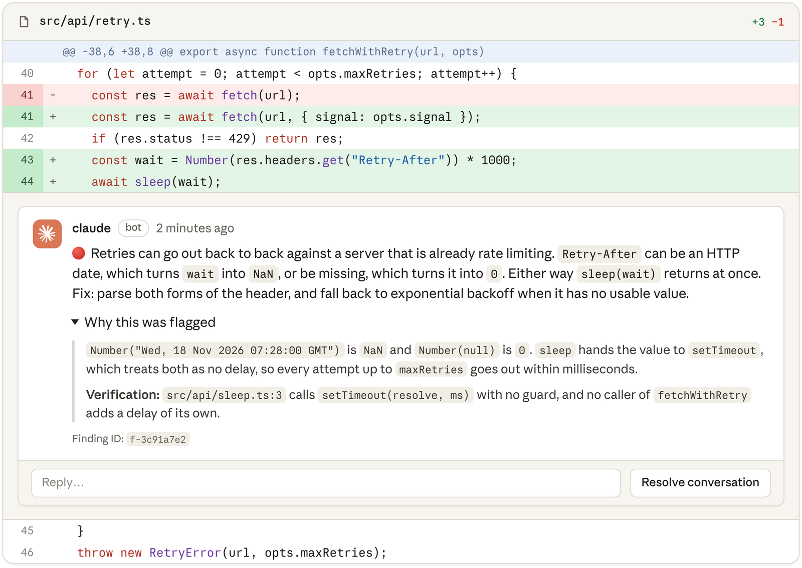

11 月 23 日，Anthropic 上线了 Claude Ship 的测试版。官方一句话概括它的定位：替团队审 PR、修 PR、批 PR。听上去只是又一个代码助手功能，但真正值得停一下的是它背后那条逻辑——当代码的大部分已经由 Claude 自己写出来，人类逐行审批就从质量保障变成了吞吐瓶颈。Anthropic 给出的解法不是"加快人工",而是把审批权本身也交给一个 Agent，前提条件只有一个：团队把政策写成一个文件，放进了仓库。
一、背景：瓶颈从"写"挪到了"审"
过去两年，编程 Agent 的产出速度涨得比审查能力强得多。Claude Code 团队自己公布的数据能说明问题：从 6 月到 9 月，团队合并的 PR 数量翻了一倍以上，而这也意味着每一行代码要拿到的人类注意力被稀释了一半。开源社区里同样的话题在反复出现——PR 越堆越多，reviewer 变成排队系统的入口，一个文档 typo 也可能在队列里躺三天。
Claude Ship 瞄准的就是这段"PR 打开之后"的空白：代码写完到合并之间，开发者在等 CI、等反馈、等一个能点 Approve 的人。这段流程过去没有产品化，因为它不属于"写代码"。
二、核心内容：三个 Agent，一条流水线
Claude Ship 不是单体产品，而是把三个角色串了起来，各自权限被刻意拆开：
- Code Review（已正式可用）：从多个视角审查代码库，收集问题后对抗性地自我验证一遍，再分类贴到 PR 上。每个仓库可选 Quick / Standard / Deep 三档深度。
- PR Steward（测试版）：让 PR 保持"绿"。CI 挂了、合并冲突了、有人提了意见，它去修。关键设计是它被明确禁止批准和合并，而且每次 push 之后都会留言说明改了什么、怎么撤销；开发者可以
@claude stop让它停手。 - Claude Approvals（测试版）：读一份团队写在仓库里的策略文件，符合条件就自己批准，不符合就要求人工签字。官方给的说法是"更聪明的 CODEOWNERS"。
接入方式有两条。开发者侧在 Claude Code 里敲 /ship，它会推分支、开 PR、跑审查、修反馈，一路推到可合并状态；管理员侧则按仓库开启，之后所有 PR 自动进入流水线，还能设置每月的花费上限。

官方给的两个数字
Anthropic 拿自家 Claude Code 团队当案例：合并 PR 数从 6 月到 9 月翻倍以上，同期被回滚的变更占比下降超过 40%。如果这组数字成立，它反驳的正是"AI 审查等于放水"的直觉——审得更多，同时错得更少。为了推企业采用，Anthropic 还给符合条件的 Claude Enterprise 组织准备了至少 10,000 美元的 Ship 额度，需在领取后 30 天内用完，领取截止 2027 年 1 月 15 日。
三、各方反应：一个 PM 顺手修了文档
官方举的例子很小，但指向很清楚。某客户发现 Analytics API 文档暗示 Admin key 能拉取 Pro 和 Team 用量，产品经理跟 Claude 聊天时问了一句"有人在修吗"，Claude 直接开了一个 PR；Code Review 没发现阻塞项，文档 reviewer 签字，Claude Approvals 按策略放行，当天晚上就合了。整条链路里没有工程师参与。
「我们有很多次是 Claude Code Review 在人类 reviewer 看到 PR 之前就抓到了真问题，PR Steward 再帮提交者把它们修掉。我们仍然保留人在环里，只是人的时间现在花在真正需要人的改动上。」
竞争侧的对照也很明显。Cursor、Cognition（SWE-2.1）、OpenClaw 这一周都在往"Agent 端到端做完一件事"上走，但大多停在"改代码"这一层；把审批权也交出去、并且用仓库内的策略文件做约束，目前只有 Anthropic 明确产品化。同期 GitHub 的 Copilot 生态仍以"建议 + 人工批准"为主，Copilot 相关的劳动力数据这周还在提醒另一件事：工具的采用速度已经快过组织流程的调整速度。
四、深度解读：策略文件才是真正的产品
审批权从"人"搬到了"文件"
Claude Approvals 的形态值得琢磨：政策不是后台里的勾选项，而是仓库里的一份文件，跟着代码一起走版本、一起被 review。这等于把"谁有权批什么"从组织架构图搬进了 Git 历史。好处是审计链条天然完整，坏处也很直白——改一份策略文件，就能悄悄扩大 AI 的合并权限，而这类改动很可能被当成普通文档 diff 放过。官方自己也建议先跑 observe-only 模式，攒够信心再挂进 branch protection。
风险声明写在了最显眼的地方
官方文档里有一句不带修饰的话："Claude Ship 使用 AI，可能漏掉 bug、安全漏洞或其他问题。"这不是免责套话，而是产品边界：Code Review 能抓的是"能自证的问题"，比如这周 PR 里被自己抓出来的 Retry-After 解析缺陷——HTTP 日期格式会让等待时间变成 NaN，退避逻辑直接失效。这类 bug 有明确的反例可以验证。而权限提升、业务逻辑错位、跨服务的时序问题，没有可执行的断言，Agent 给的"没发现问题"和"没看懂"是同一种输出。
它顺手把 Anthropic 的平台叙事补齐了
把这一周的发布排在一起看：11 月 23 日 Claude Ship，11 月 24 日 Skills over MCP（服务器可以随工具一起下发工作流）+ Tasks/Elicitation 转正 + artifact 一键装成 Mac/Windows 桌面应用。MCP 侧的数字已经很可观——月均 SDK 下载 7 亿次、Claude 上 1 万个以上连接器、工具检索让多服务器场景的上下文占用下降 85% 以上。这套组合的意图是把 Claude 从"对话框"变成"跑在别人系统里的执行层"，而 Ship 是它第一次伸手去碰软件交付流程里最敏感的那一段：合并。
五、一句话总结
Claude Ship 真正的产品不是那三个 Agent，而是"把审批政策变成仓库里的一个文件"这个动作——它让 AI 的合并权限第一次变成可 diff、可回滚、可被 code review 的对象；而代价是，从今往后代码评审里最该被认真读的那份文件，可能不是源码。
原文：Introducing Claude Ship（Claude 官方博客，2026-11-23）｜MCP servers can now ship skills（2026-11-24）｜Turn artifacts into apps（2026-11-24）｜配图：Claude 官方博客流程图与 PR 截图